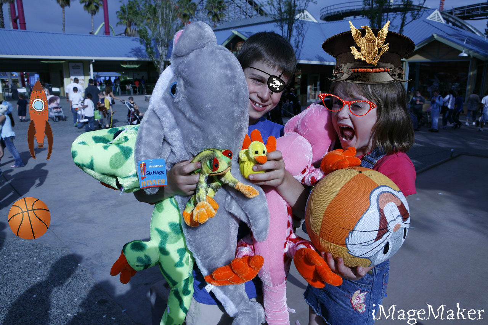
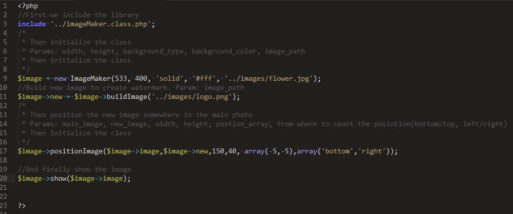

“iMageMaker” Documentation by “pavkatar” v1.0
“iMageMaker”
Created: 10/2010
By: Pavel Nikolov
Email: pavkatar@gmail.com
Thank you for purchasing my theme. If you have any questions that are beyond the scope of this help file, please feel free to email via my user page contact form here. Thanks so much!
Table of Contents
A) Description - top
iMageMaker is powerful image processor for php. The library can be implement in all frameworks, systems or scripts. Have alot of options and is design to be easy to use.
B) Code Preview - top
The code is extremly easy to read and write:

//First we include the library
include '../imageMaker.class.php';
/*
* Then initialize the class
* Params: width, height, background_type, background_color, image_path
* Then initialize the class
*/
$image = new ImageMaker(533, 400, 'solid', '#fff', '../images/flower.jpg');
//Build new image to create watermark. Param: image_path
$image->new = $image->buildImage('../images/logo.png');
/*
* Then position the new image somewhere in the main photo
* Params: main_image, new_image, width, height, postion_array, from where to count the posiotion(bottom/top, left/right)
* Then initialize the class
*/
$image->positionImage($image->image,$image->new,150,40, array(-5,-5),array('bottom','right'));
//And finally show the image
$image->show($image->image);
C) Demos - top
1. Blur effect:
To create this effect you take the code from "tests/blur.php":
Borders effect:
To create this effect you take the code from "tests/border.php":
2. Brightness effect:
To create this effect you take the code from "tests/brightness.php":
3. Colormaps:
To create this effect you take the code from "tests/colormap.php":
4. Contrast effect:
To create this effect you take the code from "tests/contrast.php":
5. Crop effect:
To create this effect you take the code from "tests/crop.php":
6. Dropshadow effect:
To create this effect you take the code from "tests/dropshadow.php":
7. Flip effect:
To create this effect you take the code from "tests/flip.php":
8. Flip2 effect:
To create this effect you take the code from "tests/fliphor.php":
9. Grayscale effect:
To create this effect you take the code from "tests/grayscale.php":
10. Reflect effect:
To create this effect you take the code from "tests/reflect.php":
11. Resizer effect:
To create this effect you take the code from "tests/resizer.php":
12. Resizer2 effect:
To create this effect you take the code from "tests/resizerfalse.php":
13. Rotate effect:
To create this effect you take the code from "tests/rotate.php":
14. Transperant effect:
To create this effect you take the code from "tests/transperant.php":
15. Transperant with colors effect:
To create this effect you take the code from "tests/transperantColor.php":
Once again, thank you so much for purchasing this theme. As I said at the beginning, I'd be glad to help you if you have any questions relating to this theme. No guarantees, but I'll do my best to assist. If you have a more general question relating to the themes on ThemeForest, you might consider visiting the forums and asking your question in the "Item Discussion" section.
Pavel Nikolov